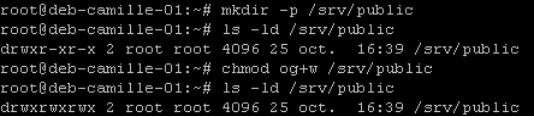
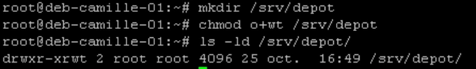
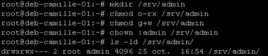
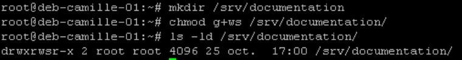

Transcription intégrale structurée du support et de ses instructions. La mise en forme est adaptée au Web ; les compléments pédagogiques restent dans leur onglet distinct.
TP du Module 11 – Droits sur les fichiers et répertoires
Avant de démarrer ce TP, il convient d’avoir suivi les vidéos des modules 1 à 11 et d’avoir réalisé les TP proposés.
Durée estimée
45 minutes à 1 heure
Trouver les solutions pour les besoins suivants :
Création de la structure de stockage dans le dossier /srv (Données des services hebergées, par exemple unh serveur de fichier). Ajout du droit d’écriture à others .
Création du dossier sans l'option -p, devenu inutile maintenant que /srv existe ajout du droit w à others ainsi que du droit t , le sticky bit, qui interdit la suppression par d’autres comptes que l’utilisateur propriétaire ou root

mkdir -p /srv/public
ls -ld /srv/public
chmod og+w /srv/public
ls -ld /srv/public
mkdir /srv/depot
chmod o+wt /srv/depot
ls -ld /srv/depot/Suppression de tous les droits pour others ajout du droit d’écriture pour le groupe propriétaire Affection du groupe admin comme groupe propriétaire
Ajout du droit d'écriture pour le groupe ainsi que du droit s qui active le SetGID .

mkdir /srv/admin
chmod o-rx /srv/admin
chmod g+w /srv/admin
chown :admin /srv/admin
ls -ld /srv/admin/
mkdir /srv/documentation
chmod g+ws /srv/documentation/
ls -ld /srv/documentation/